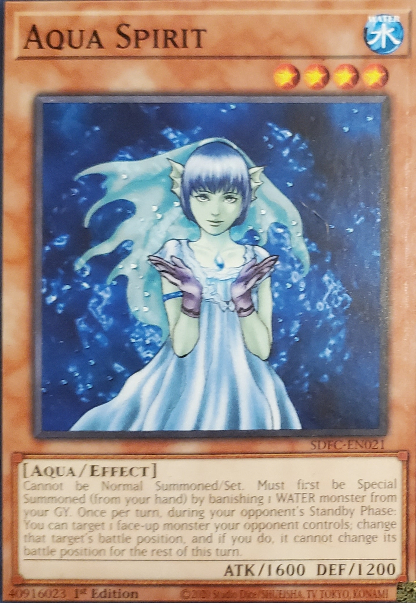

Aqua Spirit
Water
Level: 4
Aqua
Effect
Atk/1600 Def/1200
Cannot be Normal Summoned/Set. Must first be Special Summoned (from your hand) by banishing 1 WATER monster from your GY. Once per turn, during your opponent's Standby Phase: You can target 1 face-up monster your opponent controls; change that target's battle position, and if you do, it cannot change its battle position for the rest of this turn.